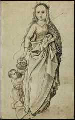

| |
In line with research across the British Museum the Department of Prints and Drawings has been conducting a check of its collections to establish whether any material acquired since 1933 was stolen or forcibly acquired by the Nazis.
In such cases we are endeavouring to ensure that the material was correctly restituted at the end of World War II and was accordingly acquired by the British Museum with good title. This type of research is not at all straightforward because it is not normal practice for art dealers to keep long term records of all material that passes through their hands.
A decision was taken to concentrate research on the provenance of old master drawings. Two major areas of the collection have been omitted from systematic research for different reasons: English watercolours are extremely unlikely to have been stolen by the Nazis as the majority have never left the United Kingdom; individual prints are in almost every case impossible to identify because they exist in numerous identical impressions. 6,000 drawings have been acquired since 1933, but of these 1,470 are above suspicion because they came as a group from the Philips-Fenwick collection which was formed in England in the nineteenth century.
The provenance of the remaining drawings (click here for a full list) has been checked against the list of suspect dealers and collectors compiled by the Office of Strategic Services in the US at the end of the War. In some cases, enough was known about their whereabouts during the 1933-45 period to be certain that their previous owners had good title, but no corroborative evidence has yet been found for the following eight drawings:
1. Aspertini, Amico, Satire on the Holy League formed by Julius II against the French Bought by the British Museum from Gilhofer & Ranschburg. 1939-10-14-148
2. Barye, Antoine Louis, Lion on the prowl Bequeathed by César Mange de Hauke, 1968-2-10- 27
3. Corot, Jean Baptiste Camille, Portrait of an unknown young woman reclining, Bequeathed by César Mange de Hauke, 1968-2-10-21
4. Géricault, Jean Louis André Théodore, The Coal Wagon, or Le Chariot, Route de Londres Bequeathed by César Mange de Hauke, 1968-2-10-28
5. Huber, Wolfgang, The Last Judgement Bought from A. Rosenthal, dealer in Oxford, 1938-1-8-1
6. Jongkind, Johan Barthold, Le Murier; landscape with a horse and cart Bequeathed by César Mange de Hauke 1968 - 2 - 10-29
7. Prins, Johannes Huibert, A painter with his family in an interior Bought from A. Duits, 1939-7-.11-2
8. Prud'hon, Pierre Paul, Nude woman standing, study for ‘La Navigation' Bequeathed by César Mange de Hauke,1968-2-10-18
Further details of these drawings can be seen on the National Museum Directors' Conference website which provides full information on research into spoliation being carried out in the British Museum and other museums and galleries throughout the United Kingdom |
|
DRAWINGS FROM THE COLLECTION OF DR ARTHUR FELDMANN
In April 2006, the Trustees welcomed the decision of the Spoliation Advisory Panel on the case of four Old Master drawings in the Museum from the collection of Dr Arthur Feldmann.
The drawings were wrongfully seized by the Gestapo from the late Dr Feldmann on 15 March 1939. Three of the drawings entered the Museum's collection through a sale at Sotheby's in 1946, the fourth - by a follower of Martin Schongauer - was part of a substantial bequest to the Museum in 1949.
The drawings are:
Niccolò dell'Abbate, The Holy Family; BM reg. no: 1946-11-16-1
Nicholas Blakey, An Allegory on Poetic Inspiration with Mercury and Apollo, BM reg. no: 1946-11-16-2
Martin Johann Schmidt, Virgin and infant Christ, adored by St Elizabeth and the infant St John, BM reg. no: 1946-11-16-3

Follower of Martin Schongauer, St Dorothy with the Christ Child, 1508, pen and ink. BM reg. no: 1949-4-11-98
Mr Peled, Dr Feldmann's heir, and the British Museum had jointly proposed to the Panel that Mr Peled should receive compensation for the loss of the drawings, and that the drawings should remain in the British Museum collection.
The Panel has recommended that Mr Peled should receive an ex gratia payment from the government. Mr Peled said "On behalf of Dr Feldmann's heirs, I would like to express our delight that these drawings are remaining in the British Museum. We are sure that this is what our grandfather would have wanted, for them to be available to the public and for future research. We also want to express our thanks to the British people for offering shelter to those fleeing from the Nazis. We owe our lives to them. I want to make it clear that we, the claimants, decided to pursue this claim on our own account because we felt strongly that the drawings ought to remain in the British Museum, whatever the British Courts or Parliament may decide about the powers of UK museums and galleries to return art looted by the Nazis." |
|
|
|